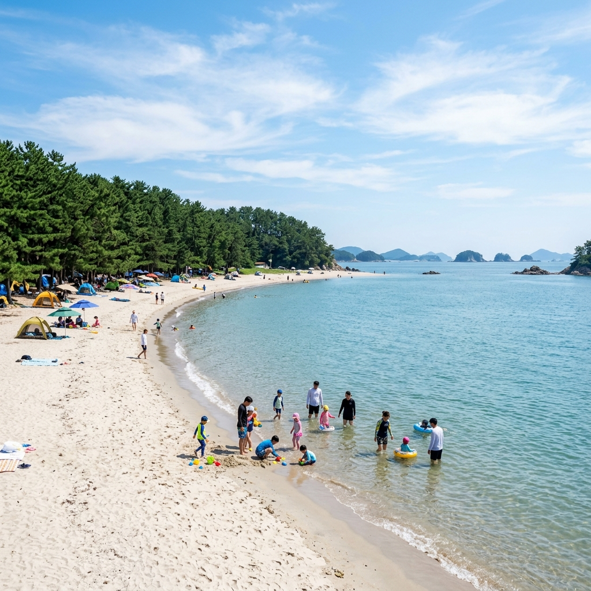
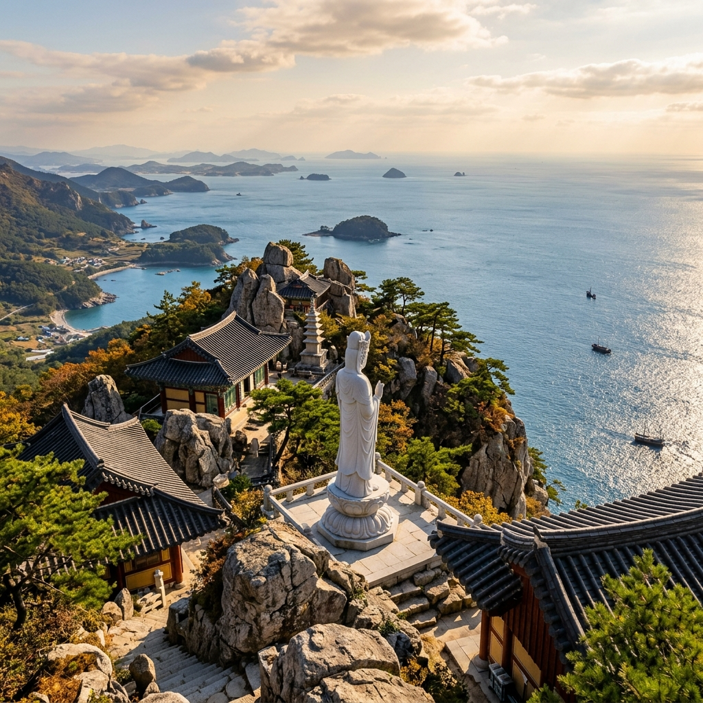
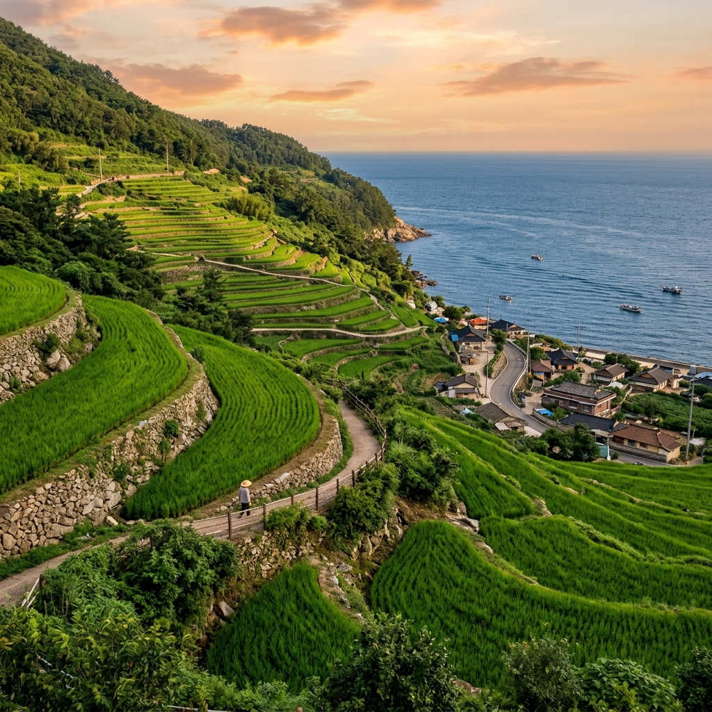

남해 남쪽 끝자락에 자리한 상주은모래비치는 이름 그대로 모래가 은빛으로 반짝이는 해변입니다. 활처럼 부드럽게 휜 백사장 뒤로 울창한 송림이 병풍처럼 둘러서 있어, 차에서 내리는 순간 솔향과 바다 냄새가 동시에 밀려옵니다.
이 해변이 가족 단위 피서지로 꾸준히 사랑받는 이유는 분명합니다. 만(灣) 안쪽에 폭 안겨 있는 지형이라 파도가 잔잔하고, 백사장이 완만하게 깊어져 아이들이 물에 들어가도 한참을 걸어야 어른 허리 높이가 됩니다. 제가 갔을 때도 유아 동반 가족이 모래밭 가까이에서 물장구를 치며 안전하게 놀고 있었습니다.
백사장 길이는 약 2km에 이르고, 모래가 곱고 단단한 편이라 맨발로 걸어도 발이 푹푹 빠지지 않습니다. 송림 그늘 아래에 돗자리를 펴면 한낮 땡볕도 한결 견딜 만했는데요. 그늘 자리가 한정적이라, 여름 성수기에는 조금 서둘러 도착해 자리를 잡는 편이 좋겠습니다.
해변 한쪽으로는 멀리 바다 위에 떠 있는 작은 섬들이 보여, 단순한 물놀이를 넘어 풍경 자체로도 마음이 트이는 곳입니다. 아이들은 물놀이에 빠져 있고, 어른들은 솔숲 그늘에서 멍하니 바다를 바라보던 시간이 이번 여행에서 가장 좋았던 순간 중 하나였습니다.
해변 입구 쪽에는 샤워장과 탈의실, 간단한 매점이 모여 있어 물놀이 뒤 정리도 수월했습니다. 다만 성수기에는 샤워장 줄이 길어지는 편이라, 물놀이를 조금 일찍 끝내고 한가한 시간에 씻고 나오면 시간을 아낄 수 있었는데요. 모래가 워낙 고와서 아이들 몸과 짐에 모래가 많이 묻으니, 큰 수건과 갈아입을 옷을 넉넉히 챙겨 가시길 권합니다.
물놀이용품은 해변 인근에서 구하기 어려울 수 있으니 튜브와 구명조끼, 아쿠아슈즈 정도는 집에서 미리 준비해 가는 편이 마음이 놓였습니다. 잔잔한 만이라 해도 바다는 바다인 만큼, 어린아이에게는 구명조끼를 꼭 입히고 보호자가 가까이에서 지켜보는 것이 안전합니다.

해수욕장은 정식 개장 기간에만 안전요원과 편의시설이 갖춰지므로, 가족 여행이라면 개장 일정을 확인하고 가시는 편이 안전합니다. 남해 상주은모래비치는 통상 7월 초에 문을 열어 8월 중순 무렵까지 운영되는 패턴을 보여 왔는데요.
다만 정확한 개장일과 폐장일은 해마다 기상과 지자체 사정에 따라 달라질 수 있습니다. 올해 구체적인 날짜는 발행 시점 기준으로 아직 일정이 유동적인 부분이 있어, 방문 직전에 남해군청 관광 안내나 상주은모래비치 공식 채널에서 한 번 더 확인하시기를 권해 드립니다.
| 구분 | 안내 |
|---|---|
| 위치 | 경남 남해군 상주면 상주리 일원 |
| 개장 시기 | 통상 7월 초 개장(연도별 변동, 방문 전 공식 확인) |
| 특징 | 약 2km 은빛 백사장, 송림 그늘, 완만한 수심 |
| 편의시설 | 샤워장·탈의실·주차장·캠핑장(개장 기간 운영) |
해변 인근에는 오토캠핑장과 민박, 펜션이 모여 있어 1박 여행으로 묶기도 좋습니다. 당일치기라면 아침 일찍 들어가 오전 물놀이를 끝내고, 햇볕이 가장 강한 한낮에는 그늘에서 쉬거나 다음 코스로 이동하는 리듬을 추천드립니다.
상주은모래비치에서 차로 멀지 않은 곳에 남해 금산(錦山)이 솟아 있고, 그 정상 가까이에 보리암이 자리합니다. 보리암은 강원도 양양 낙산사 홍련암, 강화 보문사와 함께 흔히 한국 3대 기도처로 꼽히는 곳인데요. 기도 영험이 깊다고 알려져 사시사철 참배객의 발길이 끊이지 않습니다.
보리암이 특별한 이유는 풍경에 있습니다. 절벽 위에 아슬아슬하게 걸린 해수관음상 앞에 서면, 발 아래로 남해 바다와 점점이 떠 있는 섬들, 그리고 상주 일대 해안선이 한눈에 펼쳐집니다. 일출 명소로도 유명해, 새벽에 올라 수평선 너머로 떠오르는 해를 보려는 분들이 많습니다.
제가 올랐던 늦은 오후에는 햇빛이 비스듬히 바다에 깔리면서 물결이 금빛으로 일렁였습니다. 아이들도 케이블카가 없는데도 "여기 진짜 높다"며 한참을 난간 앞에서 바다를 내려다보더라고요. 사진으로는 다 담기지 않는 시원함이 있는 곳입니다.
보리암은 신라 시대에 창건되었다고 전해지는 유서 깊은 암자로, 오랜 세월 기도처로 이름을 알려 왔습니다. 절 자체는 규모가 크지 않지만, 거대한 바위 봉우리들 사이에 단아하게 자리한 전각과 그 너머로 펼쳐지는 다도해 풍경이 어우러져 독특한 분위기를 자아냅니다. 종교와 무관하게 풍경만 보러 오는 분들도 많을 만큼, 한 번쯤 올라 볼 가치가 충분한 곳이었습니다.
참배객이 많은 곳인 만큼 경내에서는 다른 분들의 기도에 방해가 되지 않도록 조용히 둘러보는 배려가 필요합니다. 아이들에게도 미리 "여기는 기도하시는 분들이 많은 곳이라 조용히 다녀야 한다"고 일러 두면, 산만해지지 않고 차분하게 풍경을 감상할 수 있었습니다.

보리암을 처음 찾는 분들이 가장 많이 오해하는 부분이 바로 교통편입니다. 결론부터 말씀드리면 보리암에는 케이블카가 없습니다. 차로 산 중턱까지 올라간 뒤, 셔틀이나 도보로 마지막 구간을 이동해야 하는데요.
일반적인 동선은 이렇습니다. 먼저 복곡 제1주차장에 차를 세우고, 그곳에서 산 위 제2주차장까지 운행하는 마을 셔틀버스를 탑니다. 제2주차장에서 매표소를 지나 보리암까지는 다시 도보로 약 15~20분 정도 산길을 걸어 올라가야 합니다.
| 항목 | 내용 |
|---|---|
| 입장료(어른) | 1,000원 (초·중·고생 및 어르신 무료, 현금 준비 권장) |
| 주차요금 | 평일 4,000원 / 주말 5,000원 수준 |
| 셔틀버스 | 제1주차장 ↔ 제2주차장, 1인 왕복 2,500원 수준 |
| 마지막 구간 | 제2주차장 → 보리암 도보 약 15~20분 |
요금은 운영 사정에 따라 조정될 수 있으니 금액은 참고용으로 봐 주시고, 매표소에서 현금이 필요한 경우가 있어 약간의 현금을 챙겨 가시면 편합니다. 산길이긴 해도 정비가 잘 되어 있어, 아이를 동반한 가족도 천천히 쉬어 가며 충분히 다녀올 수 있었습니다.
셔틀을 타지 않고 제1주차장에서부터 걸어 올라가는 등산 코스도 있지만, 거리가 제법 되고 오르막이 이어져 어린아이나 어르신과 함께라면 셔틀을 이용하는 편이 현실적입니다. 반대로 산행 자체를 즐기는 분이라면 금산 정상을 거치는 등산로를 택해 능선의 기암괴석을 감상하며 오르는 것도 좋은 선택입니다. 가족 구성과 체력에 맞춰 셔틀과 도보 중 무리하지 않는 쪽을 고르시길 권합니다.
제2주차장에서 보리암까지 이어지는 길은 대체로 완만하지만, 막바지에 돌계단 구간이 있어 유모차나 휠체어로는 접근이 어렵습니다. 거동이 불편한 동반자가 있다면 이 점을 미리 감안해 일정을 잡으시는 편이 좋겠습니다.
보리암은 시간대에 따라 전혀 다른 표정을 보여 줍니다. 일출을 보려면 컴컴한 새벽에 산을 올라야 하는 부담이 있지만, 수평선이 붉게 물드는 장면은 그 수고를 보상하고도 남습니다. 다만 가족 단위, 특히 어린아이가 있다면 새벽 산행은 다소 무리일 수 있습니다.
저처럼 아이를 동반한 경우에는 오전 늦게나 늦은 오후를 추천드립니다. 한낮의 강한 햇볕을 피할 수 있고, 오후에는 빛이 부드러워져 바다 사진도 한결 예쁘게 나옵니다. 해 질 무렵에는 서쪽으로 번지는 노을이 더해져 또 다른 운치가 있었습니다.
참고로 보리암은 이른 새벽부터 밤늦은 시간까지 비교적 긴 시간 참배가 가능한 편이지만, 셔틀버스 운행 시간은 이보다 짧으니 막차 시간을 꼭 확인하셔야 합니다. 셔틀이 끊기면 1주차장까지 걸어 내려와야 해서, 어두워지기 전에 하산 계획을 세우는 편이 안전합니다.
날씨가 흐리거나 안개가 짙은 날에는 그 유명한 바다 조망이 거의 가려지기도 합니다. 풍경을 보러 가는 산이니만큼, 가능하면 시야가 트인 맑은 날을 골라 오르시면 후회가 적습니다.
여름철에는 한낮 기온이 높고 햇볕이 강해, 산을 오르는 동안 수분을 충분히 보충해 주는 것이 중요합니다. 물 한 병과 가벼운 간식, 그리고 모자나 양산을 챙기면 한결 수월했는데요. 비 예보가 있는 날에는 돌계단이 미끄러울 수 있어, 미끄럼 방지 신발과 우비를 준비하시는 편이 안전합니다.
해수욕장과 명산만으로도 하루가 꽉 차지만, 시간이 남는다면 남해 특유의 바닷가 마을 풍경을 곁들이기를 권합니다. 그중 두모마을은 바다를 향해 계단처럼 층층이 내려가는 다랭이논과, 봄철 유채·가을 메밀로 유명한 곳인데요.
여름에 찾으면 짙푸른 논과 바다가 겹쳐 보이는 풍경이 인상적입니다. 마을 안에는 카약이나 카누 같은 바다 체험 프로그램을 운영하는 곳도 있어, 아이들과 색다른 추억을 만들기에 좋습니다. 다만 체험은 사전 예약과 안전 안내를 꼭 확인하셔야 합니다.
마을을 천천히 걸으며 돌담길과 바닷가 정자를 둘러보는 것만으로도 충분히 여유로운데요. 관광지로 크게 개발된 곳이 아니라 한적해서, 사람에 치이지 않고 남해의 진짜 시골 정취를 느끼고 싶은 분들께 잘 맞습니다.
마을 안에는 소박한 카페와 식당이 몇 곳 있어, 바다를 바라보며 잠시 쉬어 가기에도 좋았습니다. 다만 식당 수가 많지 않고 영업시간이 일정치 않은 곳도 있어, 식사를 마을에서 해결할 계획이라면 미리 확인하거나 간단한 요깃거리를 챙겨 가는 편이 안심이 됩니다.
남해를 대표하는 풍경을 딱 하나만 꼽으라면 많은 분들이 가천 다랭이마을을 이야기합니다. 바다를 향한 가파른 비탈에 손바닥만 한 논이 100층 가까이 층층이 쌓여 있는 모습은, 우리 선조들이 척박한 땅을 일군 끈기를 그대로 보여 줍니다.
마을 아래로는 푸른 남해가 시원하게 펼쳐지고, 논두렁을 따라 난 산책로를 걸으면 어디서 사진을 찍어도 그림이 됩니다. 계절마다 논의 색이 달라져, 여름에는 짙은 초록의 벼가 바다와 어우러진 풍경을 만날 수 있습니다.
다랭이마을 역시 경사가 상당해, 편한 신발을 신고 천천히 둘러보시길 권합니다. 마을 곳곳에 작은 카페와 식당, 게스트하우스가 있어 잠시 쉬어 가기에도 좋았는데요. 노을 무렵 바다 위로 번지는 빛을 보며 하루를 마무리하면, 짧은 당일 코스도 길게 기억에 남습니다.
다랭이마을은 남해에서 가장 알려진 명소인 만큼 주말과 성수기에는 사람이 많이 몰립니다. 호젓하게 둘러보고 싶다면 한낮보다는 이른 아침이나 늦은 오후를 노리는 편이 좋고, 노을을 보려는 분들로 해 질 무렵 다시 붐비니 주차 자리를 미리 확보해 두면 마음이 편합니다. 논두렁 산책로는 가파른 구간이 있어, 아이들이 뛰어다니지 않도록 손을 잡고 천천히 걷는 것이 안전했습니다.

남해는 섬이지만 다리로 육지와 이어져 있어 차로 들어가기 편합니다. 자가용으로는 남해고속도로를 타고 하동 나들목으로 빠진 뒤, 노량대교(과거 남해대교 구간)를 건너 남해로 진입하는 경로가 가장 일반적인데요. 내비게이션에 목적지를 찍으면 대부분 이 길로 안내합니다.
대중교통을 이용한다면 시외버스가 현실적인 선택입니다. 서울 남부터미널에서 남해공용터미널까지 직행 버스가 하루 여러 차례 운행하고, 소요 시간은 대략 4시간 30분 안팎입니다. 부산 서부(사상)터미널에서도 남해행 버스가 비교적 자주 다닙니다.
| 출발지 | 이동 방법 |
|---|---|
| 자가용 | 남해고속도로 → 하동 IC → 노량대교 → 남해 진입 |
| 서울 | 서울남부터미널 → 남해공용터미널 직행(약 4시간 30분 내외) |
| 부산 | 부산서부(사상)터미널 → 남해공용터미널 시외버스 |
다만 남해 안에서 상주은모래비치나 보리암, 다랭이마을을 두루 도는 코스는 대중교통만으로는 배차 간격 때문에 한계가 있습니다. 가족 여행으로 여러 곳을 묶을 계획이라면 자가용이나 렌터카를 이용하시는 편이 시간 관리에 훨씬 유리했습니다.
남해는 해안을 따라 굽이굽이 도는 도로가 많아, 지도상 거리는 가까워 보여도 실제 이동 시간은 예상보다 더 걸립니다. 명소 사이를 이동할 때 30분에서 한 시간 정도는 여유 있게 잡아 두는 편이 일정에 쫓기지 않았는데요. 운전이 부담스러운 분이라면 남해 시내에서 렌터카를 빌리거나, 일부 구간만 택시를 활용하는 방법도 고려해 볼 만합니다.
제가 실제로 다녀온 순서를 토대로, 가족 단위 당일 코스를 정리해 드리겠습니다. 아침 일찍 출발해 하루를 알차게 쓰는 동선입니다.
물놀이 비중을 높이고 싶다면 보리암을 빼고 해변에서 하루를 온전히 보내도 좋고, 풍경 위주로 다니고 싶다면 물놀이를 짧게 끝내고 보리암과 마을에 시간을 더 배분하면 됩니다. 가족 구성원의 체력과 관심사에 맞춰 유연하게 조정하시길 권합니다.
하루로는 아쉽다면 남해에서 1박을 하며 여유롭게 도는 것도 좋은 선택입니다. 첫날은 상주은모래비치에서 물놀이와 캠핑을, 둘째 날 아침 일찍 보리암 일출에 도전한 뒤 다랭이마을과 두모마을을 천천히 둘러보는 식으로 나누면, 한정된 시간에 쫓기지 않고 남해를 깊이 즐길 수 있었습니다. 숙소는 해변 인근 펜션이나 캠핑장이 인기가 높아, 성수기에는 미리 예약하시는 편이 안전합니다.
좋았던 점부터 말씀드리면, 남해는 한 동선 안에 바다·산·시골 풍경이 모두 들어 있어 당일치기로도 만족도가 높았습니다. 특히 상주은모래비치는 수심이 완만해 아이들과 마음 놓고 물놀이를 즐길 수 있었고, 보리암에서 내려다본 바다 풍경은 어른들에게도 오래 남는 장면이었습니다.
아쉬운 점도 솔직히 있었습니다. 여름 성수기에는 해변 주차장이 금세 차고, 보리암은 셔틀과 도보가 더해져 어린아이나 어르신께는 다소 체력이 필요합니다. 또 남해 안에서 명소 간 거리가 가까운 듯 보여도 산길과 해안 도로라 이동 시간이 생각보다 걸리는 점도 감안하셔야 합니다.
그럼에도 미리 개장 일정과 셔틀 정보를 확인하고, 이른 시간에 움직이는 것만으로 대부분의 불편은 해소됩니다. 가족과 함께 바다와 산, 노을을 한 번에 담고 싶은 분들께 남해 당일 코스는 충분히 추천할 만한 여행이었습니다.